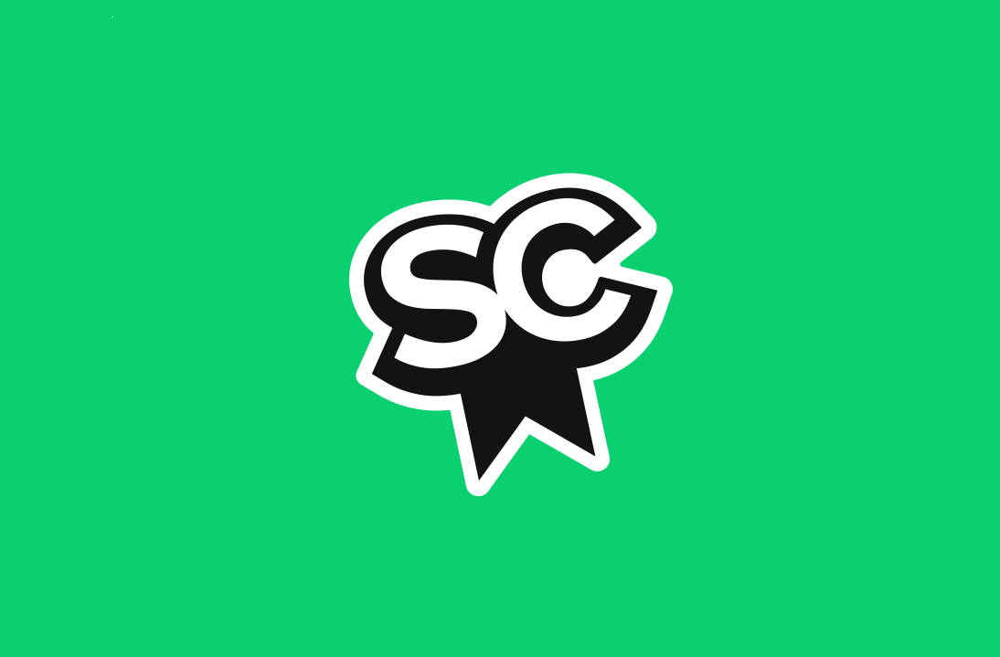
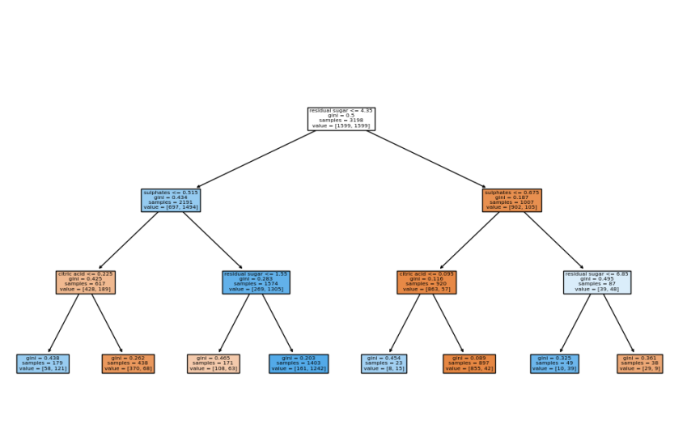
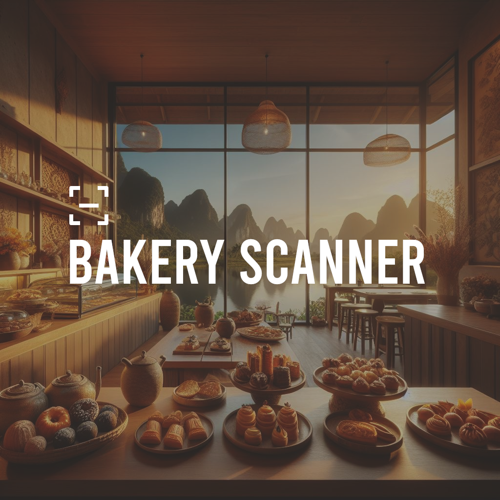
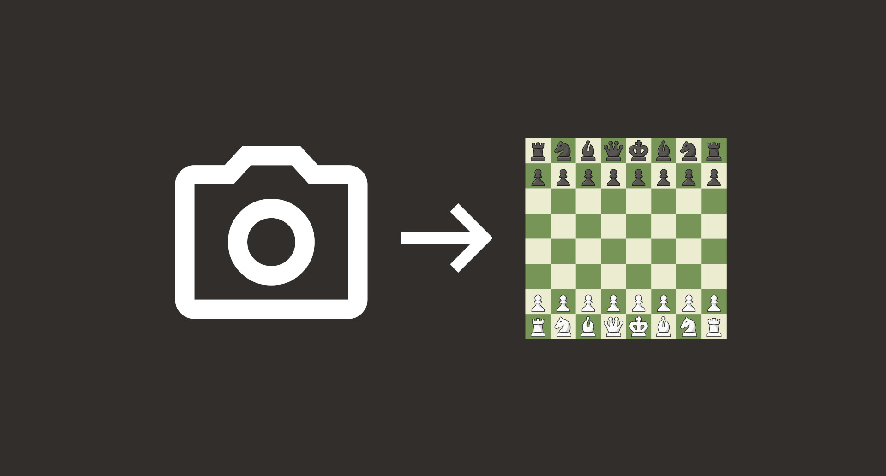

SensCritique Embed
A website widget that lets you display your SensCritique collection.
Data & AI Engineer
I build machine learning and Generative AI systems that turn data into decisions. Currently a Data Scientist at SCOR Singapore, and open to MLE & Data Science opportunities from January 2027.
I'm a Data & AI Engineer specializing in machine learning and data science, combining a strong academic background with hands-on professional experience.
At SCOR I lead strategic automation and predictive modeling projects — building Generative AI pipelines and mortality risk prediction models. Previously at Covéa, I optimized electronic document management on Microsoft Azure and Databricks, cutting costs with open-source alternatives. At Bangkok University, I built an AI-powered scanning system for product detection using computer vision.
SCOR — Singapore
Building Generative AI pipelines and mortality risk prediction models; driving strategic automation and predictive modeling.
Covéa
Optimized electronic document management on Azure & Databricks, reducing costs with open-source alternatives.
Bangkok University
Developed an AI-powered scanning system for product detection using computer vision.

A website widget that lets you display your SensCritique collection.

Implementation and evaluation of a decision tree learning algorithm for classification, from scratch.

AI-powered scanning system for product detection (pastries), engineered to streamline automated vending.

Real-time transcription of a physical chess game into a digital format from a photo.
Interactive simulation game in C++ where players maintain a garden — buying seeds and managing gardeners.
Identifying optimal placements for evacuation exits in a room, given its floor plan and obstacles.
When I'm not building models, I'm running.
Open to MLE & Data Science opportunities from January 2027. Feel free to reach out.
Get in touch